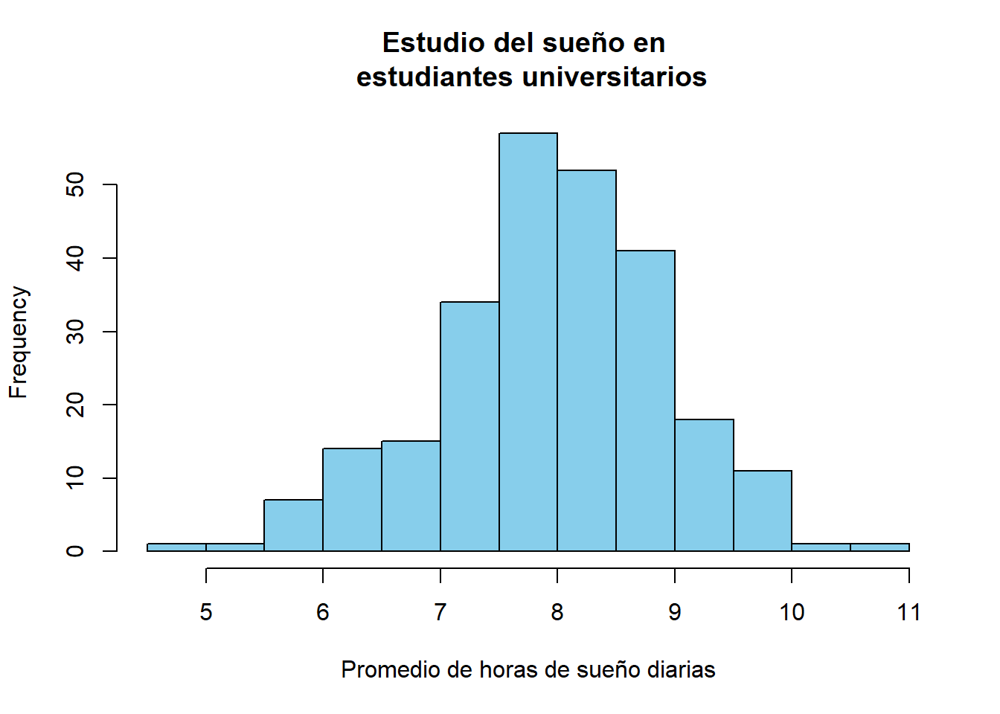
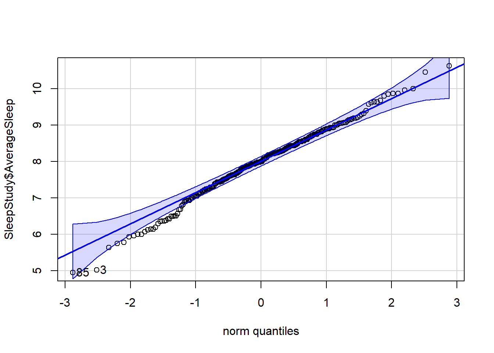
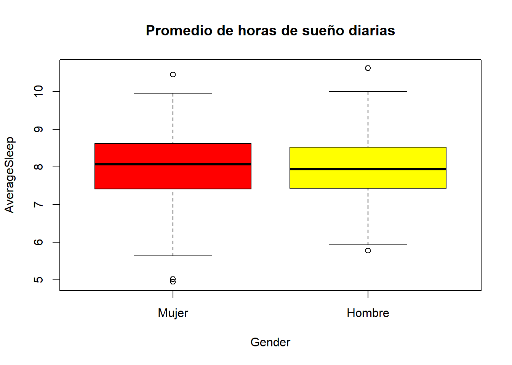
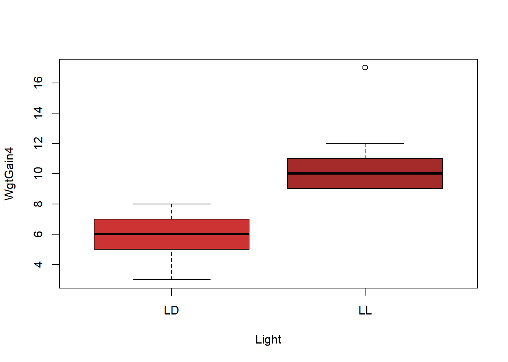
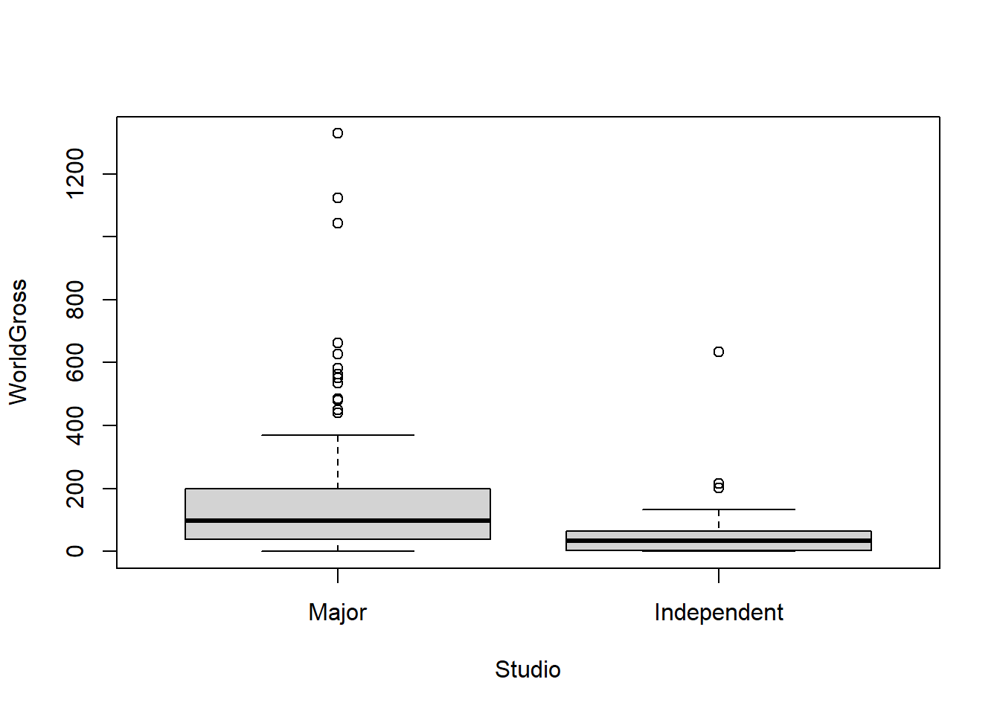

La función t.test() es la encargada de los procedimientos de inferencia sobre la media en poblaciones normales. Mediante esta función: Podemos construir intervalos de confianza para una media y para la diferencia de medias entre dos poblaciones.
Podemos llevar a cabo contrastes de hipótesis, tanto unilaterales como bilaterales, sobre una media o sobre la diferencia de medias entre dos poblaciones.
En el caso particular de la comparación de dos poblaciones, permite elegir entre considerar las varianzas poblacionales iguales o distintas.
Veamos algunos ejemplos. Utilizaremos para ello algunas bases de datos incluídas en el paquete Lock5Data, que deberemos instalar previamente.
El conjunto de datos SleepStudy contiene 253 observaciones sobre patrones de sueño en estudiantes universitarios. Para ello se realizó un seguimiento de estos alumnos durante dos semanas. La variable AverageSleep contiene el número medio de horas de sueño de cada estudiante durante este periodo. En primer lugar leemos los datos y presentamos un histograma de esta variable:
library(Lock5Data)
data(SleepStudy)
hist(SleepStudy$AverageSleep, col="skyblue", xlab="Promedio de horas de sueño diarias", main="Estudio del sueño en \n estudiantes universitarios") 
Supongamos que queremos determinar si es admisible la hipótesis de que estos alumnos duermen por término medio 8 horas diarias. Utilizaríamos entonces la sintaxis:
t.test(SleepStudy$AverageSleep, mu=8)##
## One Sample t-test
##
## data: SleepStudy$AverageSleep
## t = -0.56168, df = 252, p-value = 0.5748
## alternative hypothesis: true mean is not equal to 8
## 95 percent confidence interval:
## 7.846466 8.085392
## sample estimates:
## mean of x
## 7.965929Obsérvese que para llevar a cabo el contraste basta con especificar la media que se desea poner a prueba mediante mu=8. Como resultado del procedimiento se muestra el valor del estadístico t, sus grados de libertad (df) y el p-valor del contraste (0.57483), que indica que la hipótesis planteada es admisible. Además obtenemos también la estimación del número medio de horas de sueño en la muestra (7.96593) y un intervalo de confianza al 95%. Podemos solicitar un intervalo a otro nivel de confianza especificándolo en la llamada al t.test:
t.test(SleepStudy$AverageSleep, mu=8, conf.level=0.9)##
## One Sample t-test
##
## data: SleepStudy$AverageSleep
## t = -0.56168, df = 252, p-value = 0.5748
## alternative hypothesis: true mean is not equal to 8
## 90 percent confidence interval:
## 7.865786 8.066072
## sample estimates:
## mean of x
## 7.965929Si ejecutamos:
tt=t.test(SleepStudy$AverageSleep, mu=8)
str(tt)## List of 10
## $ statistic : Named num -0.562
## ..- attr(*, "names")= chr "t"
## $ parameter : Named num 252
## ..- attr(*, "names")= chr "df"
## $ p.value : num 0.575
## $ conf.int : num [1:2] 7.85 8.09
## ..- attr(*, "conf.level")= num 0.95
## $ estimate : Named num 7.97
## ..- attr(*, "names")= chr "mean of x"
## $ null.value : Named num 8
## ..- attr(*, "names")= chr "mean"
## $ stderr : num 0.0607
## $ alternative: chr "two.sided"
## $ method : chr "One Sample t-test"
## $ data.name : chr "SleepStudy$AverageSleep"
## - attr(*, "class")= chr "htest"Podemos comprobar que el resultado de realizar un t-test es un objeto de clase htest compuesto por una lista de elementos (statistic, parameter, etc). Ello facilita la extracción de elementos particulares del test; por ejemplo, si sólo estuviésemos interesados en el intervalo de confianza o el p-valor bastaría ejecutar:
tt$conf.int## [1] 7.846466 8.085392
## attr(,"conf.level")
## [1] 0.95tt$p.value## [1] 0.5748307o de manera equivalente
tt["conf.int"]## $conf.int
## [1] 7.846466 8.085392
## attr(,"conf.level")
## [1] 0.95tt["p.value"]## $p.value
## [1] 0.5748307Si nuestro planteamiento original hubiese sido determinar si existe evidencia suficiente de que estos estudiantes duermen en promedio más de 7 horas diarias, plantearíamos un test unilateral, especificando el sentido de la hipótesis alternativa a contrastar (en este caso μ>7):
t.test(SleepStudy$AverageSleep, mu=7, alternative="greater")##
## One Sample t-test
##
## data: SleepStudy$AverageSleep
## t = 15.924, df = 252, p-value < 2.2e-16
## alternative hypothesis: true mean is greater than 7
## 95 percent confidence interval:
## 7.865786 Inf
## sample estimates:
## mean of x
## 7.965929El paquete car proporciona la función qqPlot() que nos permite evaluar gráficamente si puede aceptarse la hipótesis de normalidad de una variable:
library(car)qqPlot(SleepStudy$AverageSleep)
## [1] 85 3En este caso se aprecia una ligera asimetría en la cola inferior de la distribución. No obstante, el test de Shapiro-Wilk permite aceptar la normalidad de esta variable:
shapiro.test(SleepStudy$AverageSleep)##
## Shapiro-Wilk normality test
##
## data: SleepStudy$AverageSleep
## W = 0.99044, p-value = 0.0959Podemos utilizar t.test() para contrastar la igualdad de medias en poblaciones normales. Por defecto, la función t.test() asume que la variable sobre la que se realiza el contraste tiene distinta varianza en los grupos que se comparan.
Para contrastar con los datos del estudio anterior si existen diferencias en el promedio de horas de sueño diarias entre hombres y mujeres, asumiendo varianzas distintas, empleamos la siguiente sintaxis:
t.test(AverageSleep~Gender,data=SleepStudy)##
## Welch Two Sample t-test
##
## data: AverageSleep by Gender
## t = 0.58588, df = 227.08, p-value = 0.5585
## alternative hypothesis: true difference in means between group 0 and group 1 is not equal to 0
## 95 percent confidence interval:
## -0.1690510 0.3121168
## sample estimates:
## mean in group 0 mean in group 1
## 7.994768 7.923235Como vemos, no existen diferencias significativas entre sexos (p-valor 0.55854). El boxplot que mostramos a continuación muestra que efectivamente ambos grupos son muy similares:
SleepStudy$Gender=factor(SleepStudy$Gender,levels=0:1,labels=c("Mujer","Hombre"))
boxplot(AverageSleep~Gender,data=SleepStudy,
main="Promedio de horas de sueño diarias",col=c("red","yellow")) Para validar la aplicación del test, comprobamos la normalidad en cada grupo:
shapiro.test(SleepStudy$AverageSleep[SleepStudy$Gender=="Hombre"])##
## Shapiro-Wilk normality test
##
## data: SleepStudy$AverageSleep[SleepStudy$Gender == "Hombre"]
## W = 0.98566, p-value = 0.3402shapiro.test(SleepStudy$AverageSleep[SleepStudy$Gender=="Mujer"])##
## Shapiro-Wilk normality test
##
## data: SleepStudy$AverageSleep[SleepStudy$Gender == "Mujer"]
## W = 0.98607, p-value = 0.1338o, de una manera más sintética:
aggregate(AverageSleep~Gender,data=SleepStudy, function(x) shapiro.test(x)$p.value)## Gender AverageSleep
## 1 Mujer 0.1338498
## 2 Hombre 0.3401863En el ejemplo anterior hemos realizado el t-test, describiendo la asignación de grupos mediante un objeto de clase formula. En general, una fórmula es un objeto descrito de la forma y~x. Cuando se emplea esta descripción es obligatorio además declarar el nombre del dataframe en que se encuentran los datos, tal como hemos hecho en nuestro ejemplo.
En ocasiones no tenemos los datos estructurados en un dataframe que incluya una variable que define el grupo de pertenencia, sino que simplemente tenemos los datos en dos vectores distintos; en tal caso, para realizar el t-test bastará con indicar los nombres de los vectores cuyas medias se pretende comparar:
chicos=c(7.55,8.57,8.49,7.56,7.38,8.85,7.82,8.13,6.77,7.88)
chicas=c(8.34,7.26,6.95,7.92,7.51,7.58,7.24,7.62,7.37,8.34)
t.test(chicos,chicas)##
## Welch Two Sample t-test
##
## data: chicos and chicas
## t = 1.1642, df = 16.55, p-value = 0.2609
## alternative hypothesis: true difference in means is not equal to 0
## 95 percent confidence interval:
## -0.2342163 0.8082163
## sample estimates:
## mean of x mean of y
## 7.900 7.613En caso de que queramos especificar que las varianzas son iguales, utilizaríamos la opción var.equal=TRUE:
t.test(AverageSleep~Gender,data=SleepStudy, var.equal=TRUE)##
## Two Sample t-test
##
## data: AverageSleep by Gender
## t = 0.5777, df = 251, p-value = 0.564
## alternative hypothesis: true difference in means between group Mujer and group Hombre is not equal to 0
## 95 percent confidence interval:
## -0.1723318 0.3153976
## sample estimates:
## mean in group Mujer mean in group Hombre
## 7.994768 7.923235En los ejemplos anteriores se contrasta si dos poblaciones difieren o no en media. Mediante t.test es posible especificar una alternativa unilateral.
Como ejemplo, analicemos los datos del conjunto FatMice18. Este dataframe corresponde a un experimento realizado para evaluar si la exposición de ratones a un número elevado de horas de luz influye en su ganancia de peso. El dataframe contieneddos variables medidas en 18 ratones:
POdemos ver los datos:
data(FatMice18)
FatMice18## Light WgtGain4
## 1 LL 10
## 2 LL 10
## 3 LL 11
## 4 LL 9
## 5 LL 12
## 6 LL 9
## 7 LL 11
## 8 LL 9
## 9 LL 17
## 10 LD 5
## 11 LD 6
## 12 LD 7
## 13 LD 8
## 14 LD 3
## 15 LD 8
## 16 LD 6
## 17 LD 6
## 18 LD 4Si observamos la estructura del factor Light:
str(FatMice18$Light)## Factor w/ 2 levels "LD","LL": 2 2 2 2 2 2 2 2 2 1 ...observamos que es un factor, con “LD” como primer nivel y “LL” como segundo. Es importante determinar el orden en que están codificados los niveles, ya que al aplicar el t-test, el primer grupo será el que corresponda al primer nivel del factor y el segundo grupo al otro. Para contrastar si los datos encierran evidencia suficiente de que la exposición a más horas de luz se asocia con un mayor incremento de peso planteamos el t-test de la forma:
t.test(WgtGain4~Light,data=FatMice18,alternative="less")##
## Welch Two Sample t-test
##
## data: WgtGain4 by Light
## t = -4.9394, df = 13.986, p-value = 0.0001092
## alternative hypothesis: true difference in means between group LD and group LL is less than 0
## 95 percent confidence interval:
## -Inf -3.216948
## sample estimates:
## mean in group LD mean in group LL
## 5.888889 10.888889(la hipótesis alternativa especificada es que los ratones en condiciones de luz normales ganan menos peso que en condiciones de luminosidad extendida). Como el p-valor es 1.091810^{-4} podemos asegurar que efectivamente a más luz mayor incremento de peso. Gráficamente:
boxplot(WgtGain4~Light,data=FatMice18,col=c("brown3","brown")) ### Diferencia de medias en poblaciones normales emparejadas Para comparar las medias de dos poblaciones en un diseño emparejado podemos utilizar t.test() con la opción paired=TRUE.
A modo de ejemplo, cargamos los datos QuizPulse10 también del paquete Lock5Data. Este archivo contiene los datos de pulsaciones por minuto de un grupo de 10 estudiantes en dos situaciones: durante la asistencia a una clase y durante la realización de un examen:
data(QuizPulse10)
QuizPulse10## Student Quiz Lecture
## 1 1 75 73
## 2 2 52 53
## 3 3 52 47
## 4 4 80 88
## 5 5 56 55
## 6 6 90 70
## 7 7 76 61
## 8 8 71 75
## 9 9 70 61
## 10 10 66 78Para determinar si existen diferencias significativas en el número de pulsaciones por minuto en ambas situaciones utilizamos el t-test para muestras emparejadas:
with(QuizPulse10,t.test(Quiz,Lecture,paired=TRUE))##
## Paired t-test
##
## data: Quiz and Lecture
## t = 0.85952, df = 9, p-value = 0.4124
## alternative hypothesis: true difference in means is not equal to 0
## 95 percent confidence interval:
## -4.406119 9.806119
## sample estimates:
## mean of the differences
## 2.7NOTA: Obsérvese que en ese caso no podemos utilizar un objeto de clase formula para realizar la comparación, ya que no hay una variable factor que defina grupos a comparar sino que, de hecho, queremos comparar dos variables distintas. Como las variables se encuentran dentro del dataframe QuizPulse10, encapsulamos el comando t.test dentro de la función with para que R pueda acceder a los datos.
Dados el nivel de significación α de un test, la desviación típica de la variable cuya media se contrasta, el tipo de test (una muestra, dos muestras independientes o dos muestras emparejadas) y la hipótesis alternativa (unilateral o bilateral), la función power.t.test() permite:
Calcular la potencia del t-test para detectar una diferencia delta con un tamaño de muestra n prefijados.
Calcular el tamaño de la muestra necesario para detectar una diferencia delta con una potencia prefijada.
Calcular la diferencia máxima delta que es posible detectar con un tamaño de muestra n para una potencia específica.
La función power.t.test recibe como argumentos los valores de delta, n y power, y devuelve como resultado aquél que se declare como NULL (o se deje de declarar en la llamada a la función). Los siguientes ejemplos aclaran el funcionamiento de esta función
Ejemplos ¿Cuál es la potencia alcanzada en el test de la sección anterior en que aceptamos que la diferencia observada de 2.7 pulsaciones por minuto no era significativa?
sdif=with(QuizPulse10, sd(Quiz-Lecture))
power.t.test(n=10, delta=2.7, sd=sdif, sig.level=0.05, alternative="two.sided")##
## Two-sample t test power calculation
##
## n = 10
## delta = 2.7
## sd = 9.933669
## sig.level = 0.05
## power = 0.08318961
## alternative = two.sided
##
## NOTE: n is number in *each* group. ¿De qué tamaño debería ser la muestra si queremos alcanzar una potencia del 85% para detectar una diferencia de 8 pulsaciones por minuto a favor de una de las dos condiciones experimentales?
power.t.test(delta=8, power=0.85, sd=sdif, sig.level=0.05, alternative="one.sided")##
## Two-sample t test power calculation
##
## n = 22.87798
## delta = 8
## sd = 9.933669
## sig.level = 0.05
## power = 0.85
## alternative = one.sided
##
## NOTE: n is number in *each* groupNecesitamos, por tanto, una muestra de tamaño 15
. Cuál es la diferencia máxima en pulsaciones por minuto que es posible detectar con una muestra de tamaño 20 y una potencia del 90%?
power.t.test(n=20, power=0.9, sd=sdif, sig.level=0.05, alternative="two.sided")##
## Two-sample t test power calculation
##
## n = 20
## delta = 10.45015
## sd = 9.933669
## sig.level = 0.05
## power = 0.9
## alternative = two.sided
##
## NOTE: n is number in *each* groupEl test de Wilcoxon-Mann-Whitney contrasta si dos muestras proceden de la misma distribución o si, por el contrario, una de ellas tiende a producir valores más altos que la otra. Suele utilizarse como alternativa no paramétrica al t-test, cuando no se dan las condiciones de normalidad en las variables. Para realizar este test en R se utiliza la función wilcox.test de sintaxis muy parecida al t.test. Podemos repetir los contrastes de la sección anterior, utilizando ahora el test de Wilcoxon-Mann-Whitney:
wilcox.test(AverageSleep~Gender,data=SleepStudy) ##
## Wilcoxon rank sum test with continuity correction
##
## data: AverageSleep by Gender
## W = 8170, p-value = 0.4119
## alternative hypothesis: true location shift is not equal to 0# Muestras independienteswith(QuizPulse10,wilcox.test(Quiz,Lecture,paired=TRUE)) ## Warning in wilcox.test.default(Quiz, Lecture, paired = TRUE):
## cannot compute exact p-value with ties##
## Wilcoxon signed rank test with continuity correction
##
## data: Quiz and Lecture
## V = 35.5, p-value = 0.4443
## alternative hypothesis: true location shift is not equal to 0# Muestras emparejadasAl igual que con el t-test podemos también especificar el sentido de la comparación. Por ejemplo, el dataframe HollywoodMovies2011 (también en el paquete Lock5Data) contiene datos relativos a la productura, ingresos, audiencias, etc, de 136 películas estrenadas en 2011. Queremos saber si estos datos muestran evidencia de que las grandes productoras generan más ingresos que las productoras independientes. La variable que codifica la productora es LeadStudio, y WorldGross es la variable que contiene los ingresos brutos obtenidos por la película. Una simple inspección de la variable LeadStudio nos muestra sus categorías:
data(HollywoodMovies2011)
table(HollywoodMovies2011$LeadStudio)##
## 20th Century Fox Aardman Animations
## 9 1
## CBS Films Columbia
## 1 3
## Disney DreamWorks
## 8 2
## DreamWorks Animation DreamWorks Pictures
## 1 3
## Happy Madison Happy Madison Productions
## 2 1
## Independent Legendary Pictures
## 32 2
## Lionsgate Miramax Films
## 5 1
## Morgan Creek Productions New Line Cinema
## 1 1
## Paramount Pixar
## 5 1
## Regency Enterprises Relativity
## 1 4
## Relativity Relativity Media
## 1 8
## Reliance Entertainment Sony
## 1 6
## Sony Pictures Animation Spyglass Entertainment
## 1 3
## Summit Entertainment The Weinstein Company
## 2 2
## Universal Vertigo Entertainment
## 9 1
## Village Roadshow Pictures Virgin
## 1 1
## Warner Bros Weinstein Company
## 12 4Definimos una nueva variable Studio con los valores “independent” o “major” para indicar si la película ha sido producida por los grandes estudios o no:
HollywoodMovies2011$Studio=ifelse(HollywoodMovies2011$LeadStudio=="Independent", "Independent", "Major")
HollywoodMovies2011$Studio=factor(HollywoodMovies2011$Studio,levels=c("Major","Independent"))
table(HollywoodMovies2011$Studio)##
## Major Independent
## 104 32La introducción del comando factor tiene como objeto garantizar que R considera “Major” como primer nivel de la variable, e “Independent” como segundo.
Ahora contrastamos si las “majors” han generado más ingresos que las independientes:
wilcox.test(WorldGross~Studio,alternative="greater",data=HollywoodMovies2011)##
## Wilcoxon rank sum test with continuity correction
##
## data: WorldGross by Studio
## W = 2440, p-value = 1.255e-05
## alternative hypothesis: true location shift is greater than 0El p-valor (1.2546210^{-5}) indica que efectivamente hay evidencia suficiente para asegurar que las “major” generan más dinero.
Gráficamente:
boxplot(WorldGross~Studio, data=HollywoodMovies2011)
En la instalación básica de R no hay ninguna función para contrastar el valor de la varianza de una variable con distribución normal, o para construir un intervalo de confianza. Es preciso cargar el paquete TeachingDemos, que sí incluye la función sigma.test()
Ejemplo Estamos interesados en determinar si en el estudio del sueño citado más arriba puede admitirse que la varianza del número de horas de sueño diario de los estudiantes es igual a 1:
library(TeachingDemos)
sigma.test(SleepStudy$AverageSleep, sigma=1)##
## One sample Chi-squared test for variance
##
## data: SleepStudy$AverageSleep
## X-squared = 234.59, df = 252, p-value = 0.4447
## alternative hypothesis: true variance is not equal to 1
## 95 percent confidence interval:
## 0.7875773 1.1175098
## sample estimates:
## var of SleepStudy$AverageSleep
## 0.9309155Por tanto puede admitirse dicha hipótesis (p-valor=0.44474). La función anterior nos proporciona además un intervalo de confianza al 95% para la varianza poblacional. Puede utilizarse la opción conf.level para especificar un nivel de confianza distinto
La función var.test(), del paquete stats (no es necesario cargarlo, se carga por defecto al arrancar R) lleva a cabo un F test para comparar las varianzas de dos poblaciones normales independientes. Al igual que el t.test en la llamada a esta función se pueden incluir las dos variables a comparar o una fórmula en la que se especifica la variable factor que define los grupos que se comparan.
Ejemplo Queremos decidira partir de los datos del estudio del sueño anterior si existe evidencia, al 5% de significación, de que la varianza del número de horas de sueño es menor entre los estudiantes varones que entre las mujeres. Las varianzas muestrales son las siguientes
aggregate(AverageSleep~Gender,SleepStudy,var)## Gender AverageSleep
## 1 Mujer 0.9869238
## 2 Hombre 0.8538676Con la codificación de la variable Gender el primer nivel de esta variable es Mujer. Por tanto el contraste deseado se lleva a cabo mediante:
var.test(AverageSleep~Gender,SleepStudy,alternative="greater")##
## F test to compare two variances
##
## data: AverageSleep by Gender
## F = 1.1558, num df = 150, denom df = 101, p-value =
## 0.2183
## alternative hypothesis: true ratio of variances is greater than 1
## 95 percent confidence interval:
## 0.8513557 Inf
## sample estimates:
## ratio of variances
## 1.155828El p-valor (0.21827) indica que aunque las mujeres presentan en la muestra más varianza que los hombres, la diferencia no es significativa.
Cuando se quiere comparar la varianza de muestras emparejadas puede utilizarse el test de Pitman-Morgan. En R este test se encuentra implementado en el paquete PairedData, en la función var.test().
Ejemplo: Queremos contrastar si existen diferencias significativas entre las varianzas del número de pulsaciones por minuto de estudiantes según que estén haciendo un examen o atendiendo a una clase
data(QuizPulse10)
library(PairedData)
with(QuizPulse10, var.test(Lecture,Quiz,paired=TRUE))##
## F test to compare two variances
##
## data: Lecture and Quiz
## F = 1.0478, num df = 9, denom df = 9, p-value = 0.9457
## alternative hypothesis: true ratio of variances is not equal to 1
## 95 percent confidence interval:
## 0.2602616 4.2184845
## sample estimates:
## ratio of variances
## 1.047812